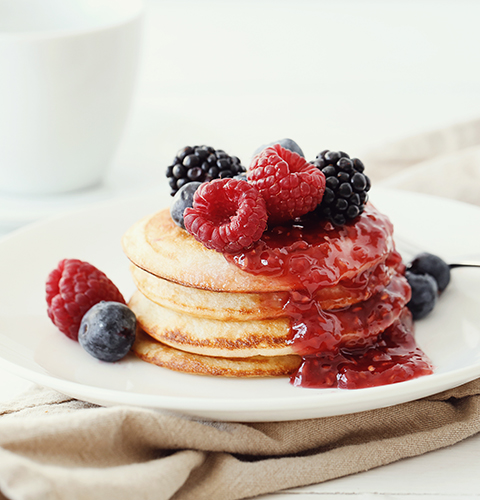

Рецепт панкейков

Описание
Лучшие панкейки – воздушные, нежные и идеально золотистые
Эти панкейки получаются невероятно мягкими внутри, с аппетитной румяной корочкой снаружи.
Они не слишком сладкие, поэтому отлично сочетаются с кленовым сиропом, свежими ягодами,
взбитыми сливками или шоколадной пастой. Готовятся быстро и просто!
Ингредиенты
- Мука – 200 г (можно заменить часть овсяной или цельнозерновой)
- Молоко – 250 мл (можно растительное)
- Яйцо – 1 крупное (или 2 маленьких)
- Разрыхлитель – 2 ч. л.
- Соль – щепотка
- Ванильный экстракт – 1 ч. л. (по желанию)
- Растительное масло – 2 ст. л. (плюс немного для жарки)
Как готовить
- Смешайте сухие ингредиенты:
В миске просейте муку, добавьте сахар, разрыхлитель и соль. Перемешайте.
- Соедините жидкие компоненты: В другой миске взбейте яйцо с молоком,
ванилью и растительным маслом до однородности.
- Объедините смеси: Влейте жидкую часть в сухую и аккуратно перемешайте лопаткой
или венчиком до исчезновения комочков. Тесто должно быть густым,
но стекать с ложки.
- Дайте тесту отдохнуть (5–10 минут) – это сделает панкейки более пушистыми.
- Жарьте на среднем огне: Разогрейте сковороду (лучше антипригарную) и
смажьте её тонким слоем масла.
Выливайте тесто порциями (примерно ¼ стакана на один панкейк).
Когда на поверхности появятся пузырьки (через 1,5–2 минуты),
переверните и обжарьте с другой стороны до золотистости (ещё около 1 минуты).
- Подавайте горячими с любимыми топпингами!
Вернуться к рецептам